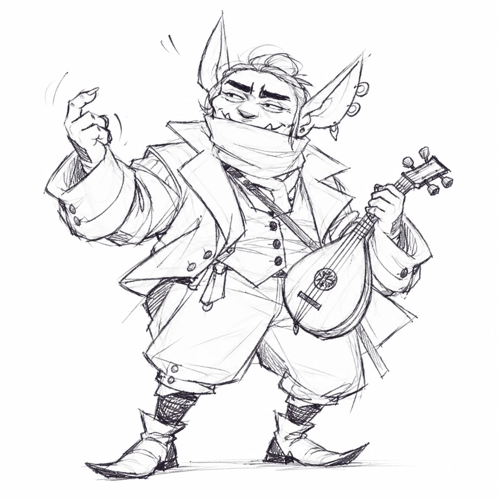
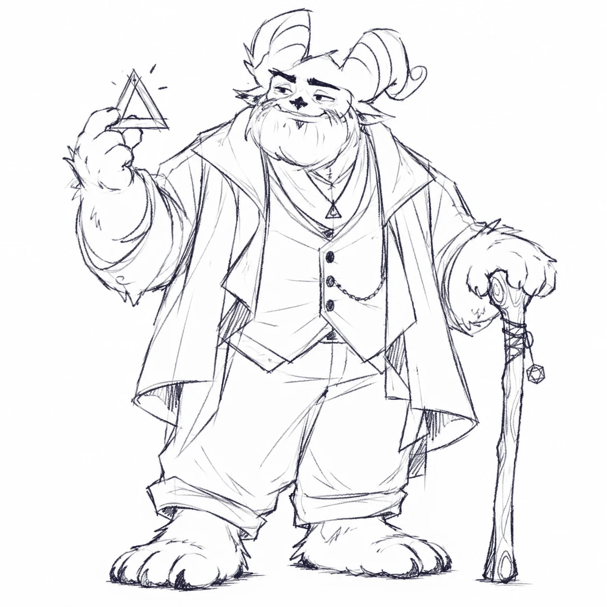
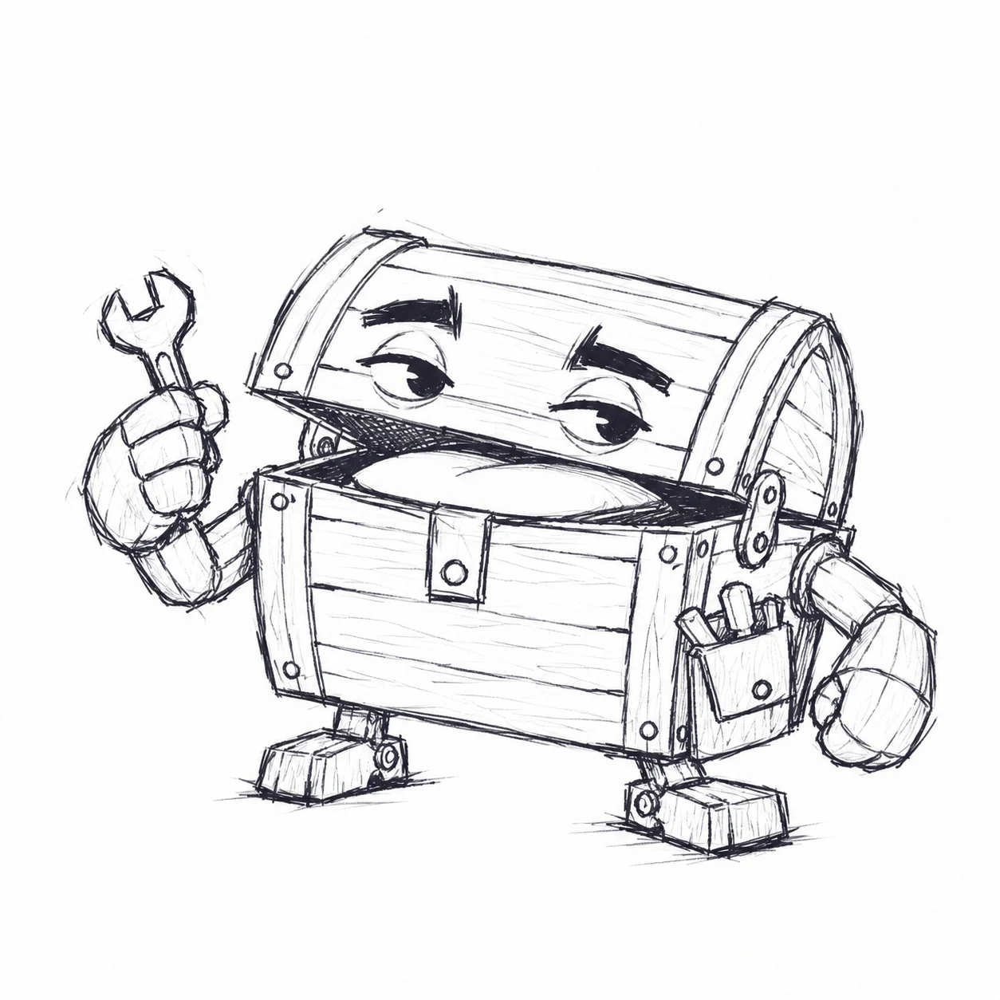
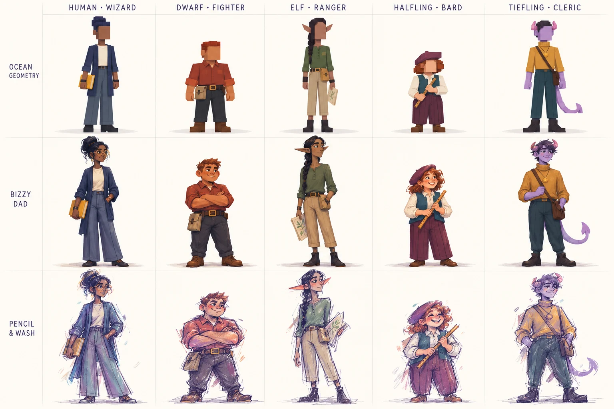

02 / ART STYLE GUIDE
One direction.
Eight disciplines.
The visual language of VRHS, from the shape of a teacher to the way a moment of discovery feels. Working direction · v0.1.
COMMON FOUNDATIONS
Expressive.
Tactile.
Confident.
Welcoming fantasy with enough attitude for a teen audience. Shapes lead; detail supports. Warm materials and purposeful light hold the world together.

Working palette
Material-led neutrals, deep ink, moss and a controlled brass accent. These are provisional presentation colors to test in the game.
Before approval
Check silhouette, value hierarchy, material clarity, age fit and small-screen readability together.
DIRECTION ACROSS THE CAST
A shared language.
Different personalities.
Compare silhouette, costume and gesture across very different bodies before expanding production.



Characters
Memorable at a glance.
Design the ensemble before polishing one individual. Every teacher gets a distinctive silhouette, gesture and useful subject prop.
- DIRECTION
- Broad value groups; deliberate proportions; practical academic costume; expressive brows and hands.
- REVIEW QUESTION
- Can the teacher and their subject be recognized at thumbnail size?
- NEXT PROOF
- Goblin model and ensemble silhouette comparison.
Environments
A place you want to inhabit.
Warmth, depth and clear focal points give the school a lived-in identity. Department differences grow from a shared material vocabulary.
- DIRECTION
- Stage around the teaching surface; organize light and value; use repeated architectural motifs and restrained dressing.
- REVIEW QUESTION
- Does the activity remain obvious without interface labels?
- NEXT PROOF
- Music workshop corner, material study and lighting target.
Animation
Personality between the words.
Idle, listen and teach are different intentions. Movement should communicate attention and give the student room to respond.
- DIRECTION
- Readable poses; small purposeful gestures; clear anticipation and settle; stillness where it matters.
- REVIEW QUESTION
- Can a silent pose or movement communicate the teacher’s intention?
- NEXT PROOF
- Pose and timing study; rigged performance follows later.
UI & Emotes
The world speaks clearly.
A confident, legible interface carries the same personality as the characters while keeping the next action easy to find.
- DIRECTION
- Clear type hierarchy; stable interaction states; symbols alongside color; expressive but restrained emotes.
- REVIEW QUESTION
- Is the next action legible at a small screen size and without relying only on color?
- NEXT PROOF
- Music prompts, selection states, captions and completion feedback.
Cards & Illustrated Content
Small images, strong identity.
Portraits, illustrated learning prompts and activity summaries should belong to the same world as the 3D assets.
- DIRECTION
- Repeat the same character proportions, palette and framing; keep visual priority intact at small sizes.
- REVIEW QUESTION
- Does a cropped portrait retain identity beside the real-time character?
- NEXT PROOF
- Faculty portrait and illustrated activity brief. Formats are proposed, not a card-game mechanic.
Rewards & Reveals
Give accomplishment a moment.
Celebrate a student’s work with a considered reveal and a visible result they can recognize as their own.
- DIRECTION
- Build anticipation, reveal clearly, then settle; avoid obscuring the work with decorative effects.
- REVIEW QUESTION
- Does the player understand what they accomplished and what changed?
- NEXT PROOF
- Music-class completion and student showcase target. No randomized reward system is implied.
VFX
Magic with a purpose.
Effects make touch, attention, change and success visible. A shared shape and timing vocabulary holds them together.
- DIRECTION
- Reserve brightness and motion for meaning; pair effects with persistent state changes; protect silhouettes.
- REVIEW QUESTION
- Can the effect’s purpose be understood, and does it preserve the teaching focal point?
- NEXT PROOF
- Instrument selection, beat pulse and one restrained success effect.
Brand & Key Art
Recognizable beyond the game.
Title, emblem, hero image and promotional material express the same tone and visual rules as the playable.
- DIRECTION
- Use the actual designed cast and world; compose for a clear subject; preserve the direction across crops.
- REVIEW QUESTION
- Would the pitch image and the game screenshot feel like the same product?
- NEXT PROOF
- Website hero treatment and a finished in-engine promotional composition.
THE PRODUCTION STANDARD
Every asset answers
to the same direction.
The guide sets the intention; drawings, AI exploration, modeling and implementation are ways to reach it. Compare outputs against the rule, correct the mismatch, and check the result in context.
The structure adapts the NFL Clash guide’s character, environment, animation, UI/emote, card, reward and VFX pillars, with brand and key art as a separate eighth discipline. Rules here are working proposals, not a claim of completed production.